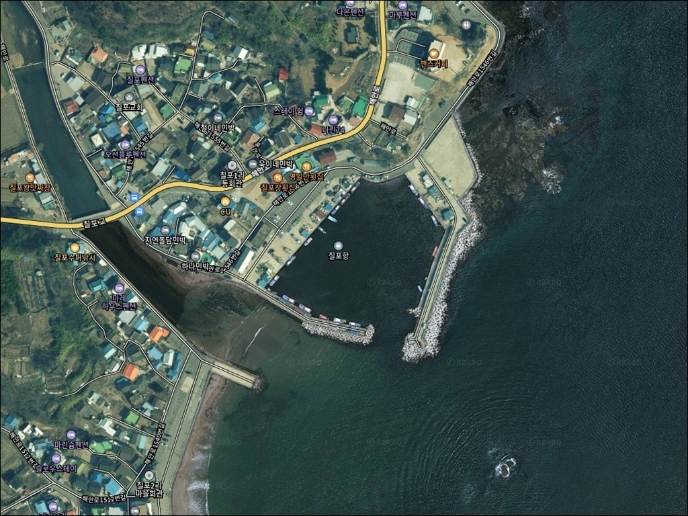
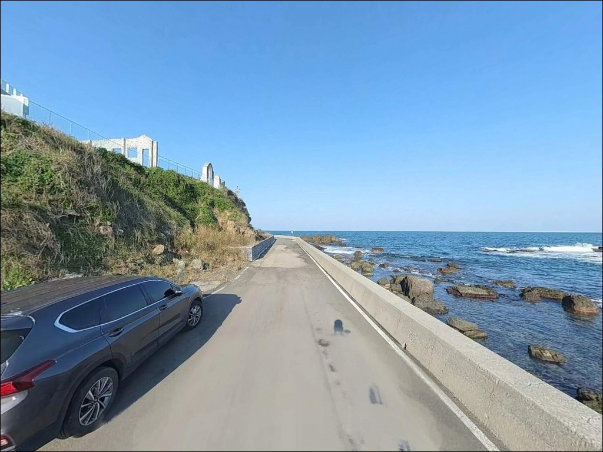
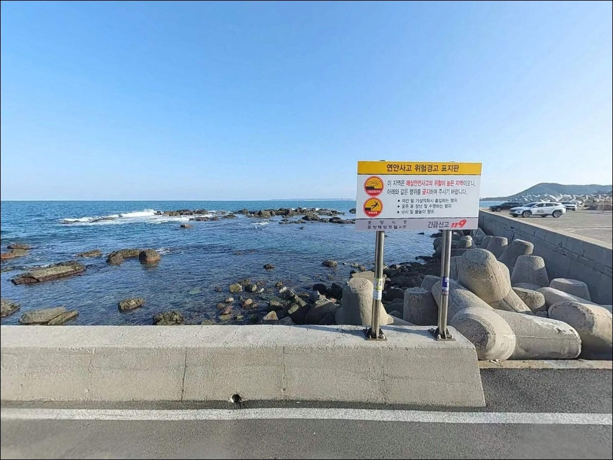
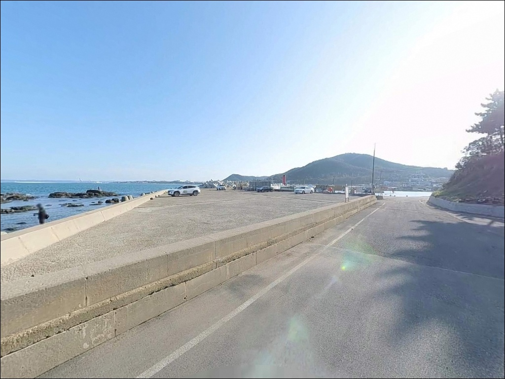
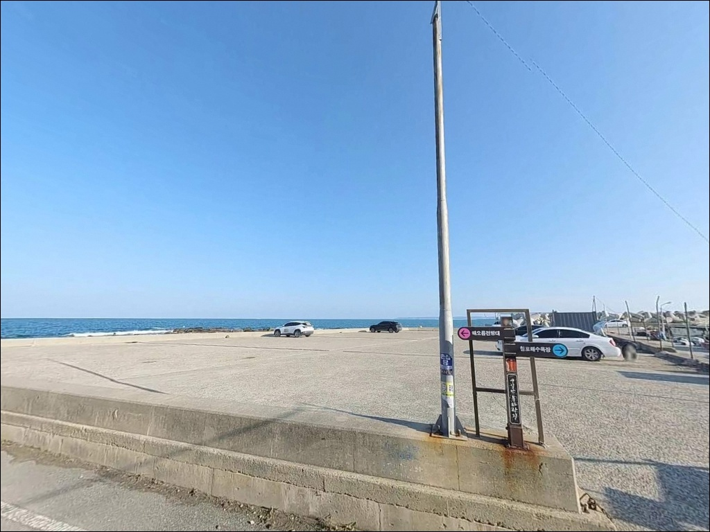
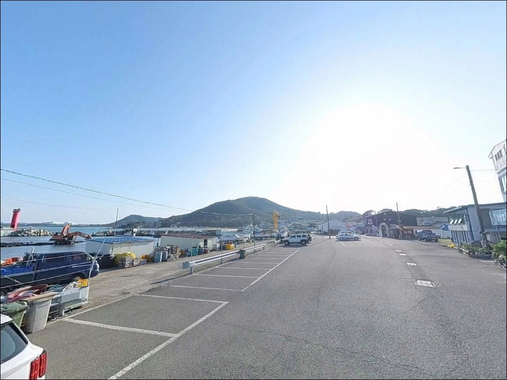
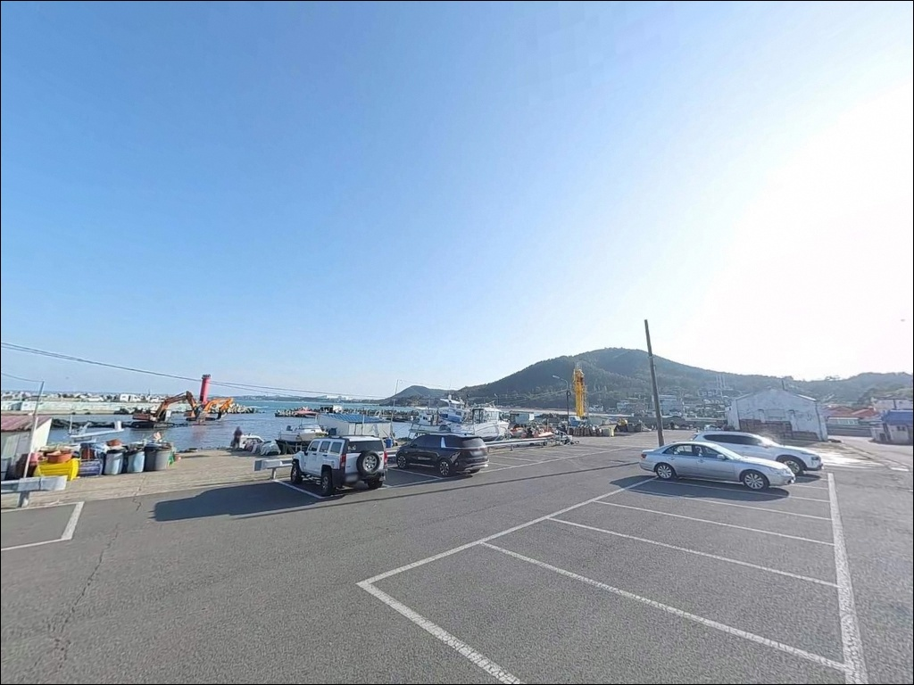
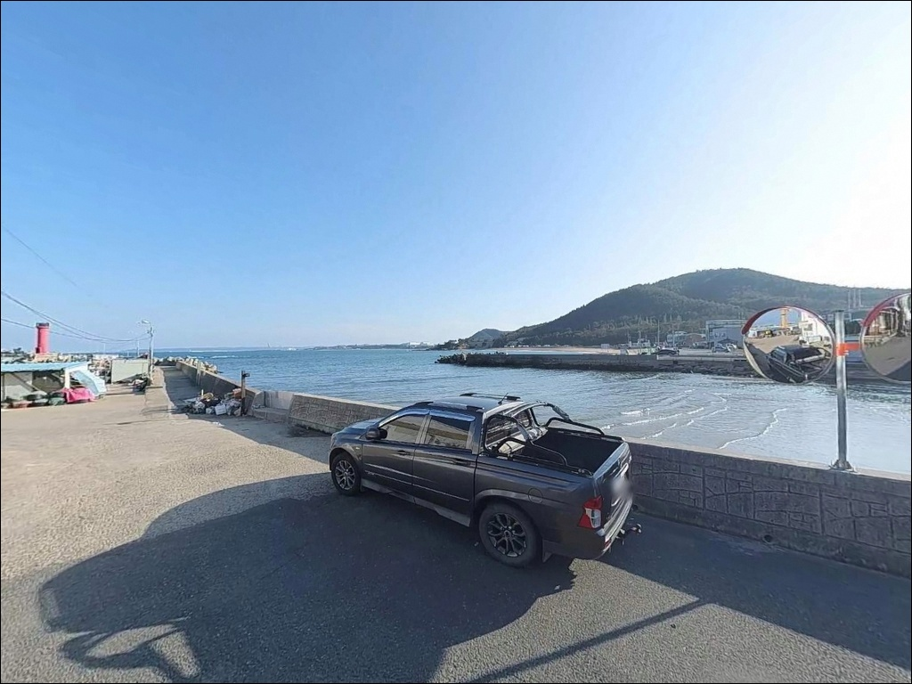
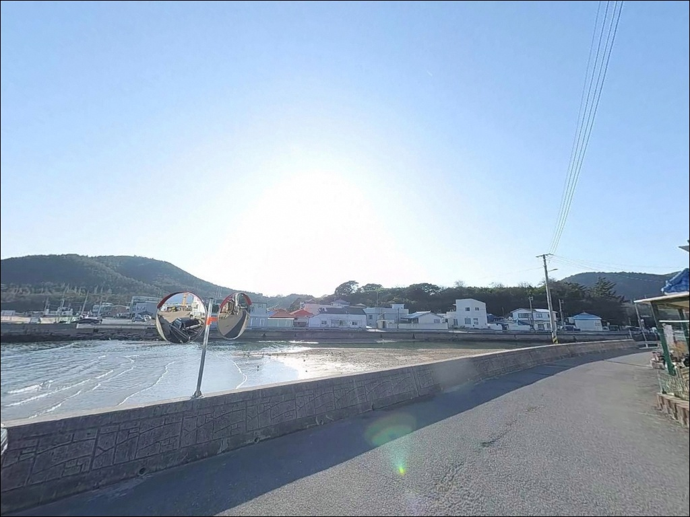

칠포항 방파제 낚시, 외항 수심 5m 수중여에서 에깅과 찌낚시로 살아난 입질
이 페이지에는 광고(제휴 링크 포함)가 있으며, 광고 링크를 통해 구매하면 운영자가 판매 수익 또는 수수료를 받을 수 있습니다. 포인트 사진: 카카오맵 스카이뷰·로드뷰. 이 페이지의 지도·사진 이미지는 카카오맵의 실제 서비스 이미지와 다를 수 있습니다.


포인트 안내
칠포항(칠포방파제)
경북 포항시 북구 흥해읍 칠포리 155-4
칠포항 방파제는 단일 낚시 방식으로 공략하면
절반을 놓치는 구조입니다.
방파제 외항·수중여·갯바위·기수역이
한 구간에 집약되어 있어
공략 지점마다 어울리는 방식이 달라지며,
지형 파악 없이 외항이나 갯바위로 진입하면
밑걸림과 파도 위험을 동시에 마주치게 됩니다.
이 글은 칠포항의 지형 구조와
낚시 방식별 공략 조건,
차박 베이스 활용법에 집중합니다.
조황 단정이나 특정 어종 보장은
이 글의 범위에 포함되지 않습니다.

1. 진입 동선과 포인트 접근성
칠포항은 포항 시내에서 북쪽으로 약 13km 거리입니다.
7번 국도 또는 해안로를 따라
칠포해수욕장 방향으로 진입하며,
항구까지 이어지는 도로는
왕복 2차선 이상으로 포장이 잘 되어 있어
대형 SUV와 캠핑카 진입에 큰 어려움이 없습니다.
항내 물양장 공간이 넓어 대형 차량도 회차가 자유롭습니다.
주차 후보는 세 곳입니다.
칠포해수욕장 공영주차장이 규모가 가장 크고
방파제까지 도보 이동이 가능합니다.
방파제 입구 인근 공터와 항구 선착장 주변 공간도
활용되지만,
어선 통행 동선을 막지 않는 자리를
먼저 확인하는 것이 기본입니다.
칠포해수욕장 공영주차장은 무료로 운영됩니다.
주말이나 성수기에는 낚시객과 방문객이 몰리는 편이라
이른 시간 입장이 유리합니다.

2. 차박 환경과 야간 체류 여건
칠포항 차박의 중심은 칠포해수욕장 공영주차장입니다.
아스팔트로 포장된 넓은 공간으로
차박 베이스로서 물리적 조건은 갖춰져 있습니다.
해수욕장 성수기(7~8월)에는 방문객이 집중되어
프라이버시 확보가 어렵지만,
비수기(9월~이듬해 6월)에는 한산하고 조용한 편입니다.
해수욕장 일원에는 가로등과 시설 조명이 설치되어
야간 보행과 장비 정리가 수월합니다.
방파제 외항과 갯바위 구간은 야간 조명이 제한적이라
개인 헤드랜턴을 반드시 지참해야 합니다.
동해 특성상 너울성 파도가 예고 없이 올라오는 경우가 있습니다.
차박과 낚시를 병행하는 일정이라면
기상청 동해안 너울 예보를
출발 전과 당일 아침 두 번 확인하는 것이
기본 준비입니다.


3. 주변 편의시설 및 인프라 현황
칠포해수욕장 내에는
포항시 관리 공중화장실 2개소와
급수대 4개소가 설치되어 있습니다.
해수욕장 구역 내에 편의점이 입점해 있으나
비수기 운영 여부는 방문 전 확인이 필요합니다.
항구 인근에는 낚시용품점과 횟집이 분포하며,
반경 3km 이내에 카페와 식당이 갖춰져 있어
당일 출조 시 보급 여건은 양호한 편입니다.
주유소는 흥해읍 방면 7번 국도 인근에서 확인됩니다.
응급 상황 발생 시 흥해읍 소재 의료기관까지
약 7~8km 거리입니다.
포항 시내 대형마트와 병원은
흥해읍 방면 7km권에서 이용할 수 있습니다.

4. 진입 전 반드시 챙겨야 할 준비사항
방문 전 조황 검색을 먼저 합니다.
'칠포항 조황', '칠포방파제 볼락',
'포항 에깅 조황'을 키워드로
최근 정보를 확인하면
현장에서 어느 방식에 집중할지
판단이 서는 편입니다.
동해안은 너울성 파도가 예고 없이 밀려오는 특성이 있습니다.
기상청 해양 날씨와 국립해양조사원 조석 정보를
출발 전 반드시 확인하고,
방파제 외항이나 갯바위 진입 여부는
기상 조건을 확인한 뒤 현장에서 최종 결정합니다.
외항 수중여 구간은 밑걸림이 잦은 지형입니다.
찌낚시와 에깅 모두 채비 손실이 발생하기 쉬운 자리라
여분 채비를 넉넉히 준비하는 것이 유리합니다.
구명조끼와 헤드랜턴은
방파제·갯바위 낚시의 기본 장비입니다.

5. 지형 기반 낚시 여건 분석
칠포항의 핵심은 방파제·수중여·갯바위·기수역
네 가지 지형 요소가 한 구간에 모여 있다는 점입니다.
방파제 외항 해저에는 수중여가 잘 발달해 있으며,
끝단 기준 수심은 5~8m권을 유지합니다.
조류 흐름이 원활한 외항 구조라
들물·날물 타이밍에 입질 구간이 살아나는 편입니다.
방파제 북쪽으로는 곡강천이 바다로 유입되는
기수역이 형성되어 있습니다.
기수역이란 하천이 바다로 유입되는 구간으로,
민물과 바닷물이 섞이는 환경 특성상
다양한 어종이 집결하는 낚시 조건이 형성됩니다.
농어·볼락·보리멸이 이 구간에서 기대해 볼 수 있는 어종입니다.
방파제와 이어진 갯바위 구간은
감성돔·벵에돔이 서식하기 좋은 지형 조건을 갖추고 있습니다.
방파제 외항과 갯바위, 기수역이 한 구간에 집약된 포인트에서는
현장 지형 파악이 조과를 결정하는 첫 번째 변수입니다.
최신 조황은 출조 전에 반드시 검색해 보시기 바랍니다.


6. 칠포항에서 낚시 방식을 결정하는 지형 조건
에깅은 가을~초겨울이 이 구간의 피크 시즌입니다.
해수욕장 백사장과 맞닿은 얕은 구간에
잘피(해초)밭 홈통이 형성되어 있어,
야간에 잘피밭 외곽을 천천히 노리는 패턴이
이 포인트 지형에 잘 맞습니다.
조류가 살아 있는 타이밍에 입질이 집중되는 편입니다.
찌낚시는 방파제 외항의 수중여 주변이
감성돔·벵에돔의 핵심 자리입니다.
만조 전후 시간대에 조류가 흐를 때 찌를 흘리면
밑걸림이 줄고 입질 확률이 올라가는 구간입니다.
감성돔은 3~4월과 6~9월,
벵에돔은 9~11월이 시즌입니다.
칠포항 외항 끝단은 수심 5~8m권 수중여가 발달하여
찌낚시와 에깅이 모두 성립하는 자리입니다.
원투낚시는 기수역 특성을 활용합니다.
초여름(6~7월) 보리멸·성대가 기대되는 구간으로,
해수욕장 백사장 구간과 방파제 내항 측이
안정적인 원투 포인트입니다.
볼락 라이트게임은 내항 가로등 주변이 주 무대입니다.
집어등 없이도 소형 지그헤드 채비로
야간 내항 가로등 라인을 천천히 탐색하는 방식이
겨울~봄 시즌에 잘 맞습니다.
갯바위 구간에서는 농어 루어도 성립하며,
야간 접근 시에는 발판 안전을 먼저 확인해야 합니다.

7. 대안 포인트와 플랜 B 동선
칠포항 자리가 혼잡하거나
파도 조건이 여의치 않을 때
첫 번째 대안은 오도1리방파제입니다.
칠포항에서 북쪽으로 약 2km 거리이며,
방파제 외항 맞은편에 큰 갯바위가 위치한 구조입니다.
감성돔·벵에돔 자리로 알려져 있고
칠포항과 해역 조건이 유사하여
즉시 이동이 가능한 현실적인 대안입니다.
에깅을 주목적으로 왔다가 조건이 맞지 않는다면
북쪽 5~10km 거리의
월포해수욕장·조사리 간이해수욕장 구간을
검토할 수 있습니다.
잘피밭 홈통이 발달한 에깅 포인트로
칠포항과 동일한 해역 패턴을 공유하는 구간입니다.
차박 대체지로는 영일만항 배후단지가 있습니다.
공간이 압도적으로 넓고 낚시 공원과 인접해 있어
칠포해수욕장이 혼잡할 경우
선택할 수 있는 대안입니다.

세 가지 지형 구조를 알면
칠포항 공략이 달라집니다
에깅·찌낚시·원투낚시를 한 출조에서
상황에 맞게 전환하며 공략하는 낚시인이라면
칠포항의 복합 지형 구조는
잘 맞는 조건입니다.
방파제 외항 수중여, 기수역 라인, 갯바위 구간이
각각 다른 입질 패턴을 형성하고 있어
한 방식이 막히면 다른 구간으로
전환하는 대응이 가능합니다.
반면 동해 너울 확인 없이
방파제 외항이나 갯바위로 직진하면
파도 위험과 밑걸림 채비 손실을
동시에 맞닥뜨리게 됩니다.
기상 확인, 조황 검색, 여분 채비 준비,
이 세 가지를 갖추고 간다면
수심 있는 외항 수중여와 조용한 기수역 라인을
하루 안에 모두 돌아볼 수 있는 포인트입니다.
비수기 칠포해수욕장 공영주차장에 차를 세우고
방파제 야간 볼락 라이트게임까지 더한다면,
낚시와 차박을 한 동선에서 마무리하기에
잘 맞는 출조가 될 수 있습니다.